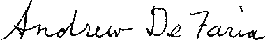

INS San Jose Sub Office
1887 Monterey Road
San Jose, CA 95112
| Re: |
Clarification of AOS
filing procedure |
|
|
Petitioner:
|
Andrew DeFaria |
|
|
Beneficiary:
|
Olga Fedoryaka |
|
|
CSC File #:
|
WAC0101653678 | |
|
Case ID #:
|
WRW2001009031 |
|
Dear INS:
I have a K-1 visa fiance who lives in your office's jurisdiction and will soon be filing her application for permanent resident status with your office. I believe that the INS official at the port of entry said that they forwarded our paperwork to the San Francisco office even though we live in San Jose..Please let me know if we should be dealing with that office instead. I am therefore writing your office for clarification about filing an application for permanent resident status through your office for persons who entered the United States under a K-1 fiancée visa and who perform the marriage ceremony within 90 days of entry. My questions are as follows:
1. If the fiancée did not receive a temporary 90 day work stamp on her I-94 at the point of entry (most points of entry no longer give this stamp), can she come into your office before the marriage and before filing the application for permanent resident status, and file an I-765 (without filing fee) under category (a)(6) and obtain a temporary EAD that will be good for the remainder of her first 90 days from the date of her entry?
2. On March 7th, 2000, Michael D. Cronin, the Acting Associate Commissioner for the INS's Office of Programs issued a memo to the field discussing aspects of the I-864 affidavit of support. The subject of that memo was the clarification of the INS policy concerning the I-864, and specifically when it must be filed. Mr. Cronin states that the affidavit of support is only enforceable at the time the adjustment of status application is "approved", not at the time the form I-485 is filed. However, the memo also goes on to state that if any particular INS office requests that the I-864 be filed at the time of filing the application for adjustment, it may do so by accepting a signed I-864 that need not meet the eligibility requirements. In other words, an INS District of Suboffice may request a signed I-864 at the time the I-485 is filed, but it cannot require the sponsor to document eligibility as a sponsor until the time the application for adjustment is adjudicated. Can you please elaborate on your office's policy as to whether you will require the I-864 at the time the I-485 is filed, and if so, will you accept a "skeletal" I-864, meaning that it is fully completed and signed/notarized, but other financial documentation such as tax returns, w2's, employment letters are not included and instead brought to the adjustment interview by the applicant?
3. Since the March 7th, 2000 "Cronin" memo indicates that the I-864 is only enforceable at the time the adjustment application is "approved", this brings up the issue of when the I-865 sponsor's change of address form must be submitted. Must I submit an I-865 change of address form between the date the I-485 is filed and before approval of the I-485, or will the I-865 sponsor's change of address form only be required after the adjustment application is approved? (Even if the answer is that the I-865 only needs to be filed after the adjustment is approved, I assure you that I will always notify your office via certified mail of any change of address for the sponsor and the international spouse at any time during which the I-864 is still binding on the sponsor).
4. I am hearing reports about some INS offices immediately adjudicating adjustment of status adjudication for K-1 beneficiaries (Dallas & Detroit INS for example). Does your office also offer immediate adjudication of adjustment of status for K-1 beneficiaries?
5. I notice that the instructions for the latest version of the I-485 (Rev. 02/07/00 N) indicate that if a K-1 fiancée beneficiary had a medical exam within the past year as required for the fiancée visa, a new medical examination will not be required at the time of filing the adjustment paperwork (please confirm your office's policy on this issue); however due to processing times at many INS District and Suboffices, the prior medical exam will be over a year old by the time of the adjustment approval. If the prior medical exam is over a year old at the time of the adjustment interview, will my client be required to bring to the interview the results of a new medical examination on an I-693 in a sealed envelope?
6. I have noticed that some INS offices do not require the submission of a $25.00 fingerprinting fee because the international fiancée, now spouse, went through the fingerprinting process at the time of her fiancée visa interview at the U.S. Consulate. Will I need to submit a $25.00 fingerprinting fee when I submit her application for permanent resident status to your office?
7. Some INS offices now require payment of the INS filing fees by a certified bank check or money order while other INS offices still accept a check drafted from the attorney's bank account or from the client's bank account. What is the fee payment policy for applications filed through your office?
8. Can my client bring in the completed adjustment of status application package into your office for "in person" filing, or must I submit this application to your office through the mail?
9. How long is it currently taking between the date I file the application for permanent resident status with your office and the date the foreign spouse will be called in to process her employment authorization card?
10. How long is it currently taking your office to schedule the spousal interview after the adjustment paperwork is filed?
11. If an I-131 application for advanced parole is submitted along with the adjustment package, how long does it usually take to issue the advanced parole in a "non-emergency" situation?
12. Finally, if an I-131 application for advanced parole is filed sometime after the adjustment application is filed, must the applicant file her I-131 "in person" with your office and will your office mail the approved I-512 parole document directly to the applicant's home address, or will she be required to pick up the I-512 "in person" at your office (I understand and have warned my client that she must not depart the United States until after she has been issued the I-512, but I just want to confirm your office's advanced parole "filing" and "pick up" process)?
If your office uses a special cover sheet or ADIT sheet for submissions of applications for permanent resident status, will you please send me this material. Thank you for your attention to these questions.
Very truly yours,

Andrew DeFaria